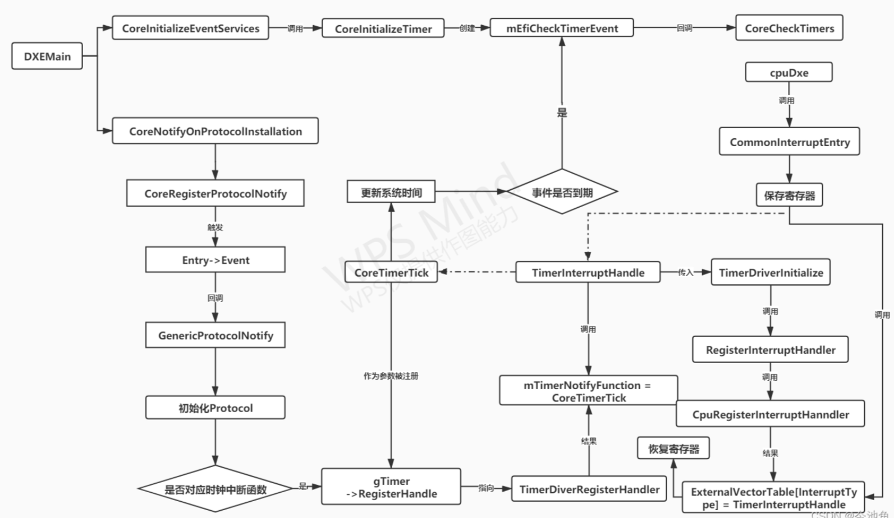

EDK2 EVENT
[toc]
简介
先来回顾一下中断处理的过程。正常执行代码，中断进来了，执行中断处理函数，中断处理函数结束后，继续执行未完成的代码。
异步操作，就是中断。UEFI 不支持中断，是个单核单线程的架构。只有时钟中断。
说到 做定时/计数器 ，最经典的当数intel兼容的8253/8254定时器，它几乎是所有的PC必须兼容支持的一颗IC，当然在其他的微处理器系统当中也是支持的，比如MSC8051,以及其他的微处理器当中。
几乎所有的Timer都能在不需要外力干涉的情况下在系统的时钟脉冲的驱动之下，自动计数，并且在计数值到达预设值的时候会通知cpu去执行特定的动作，并且在处理完之后能自动接着计数，不辞辛劳做着机械性的无差错的动作。
在PC/AT架构UEFI当中我们通常会使用8254来作为核心心跳Timer，它工作在mode 3，时钟频率是1.1931816MHz，设定的tick（mTimerPeriod）间隔，默认是1ms（10000个tick基础计数单位=10000*100ns），并且打开CPU中断IRQ0。当计数器减到0的时候，就会通过OUT pin给8259的IRQ0发送中断，这个时候CPU就会中断当前操作，进行Timer的中断处理服务。
当然前提是我们在此之前有准备好cpu archprotocol和Legacy8259Protocol，设置好中断向量表,当中断到来的时候，cpu会从IDT表中依据中断号，调用Timer中断服务TimerInterruptHandler。
Timer中断
现在再来看Timer中断异常是怎么做的，它会提供哪些服务，以下是简单的列举。
**1.**关中断
**2.**清除中断源
**3.**获取系统时间锁（关中断，虽然中断此时是关的）
**4.**调用注册的具体的Timer服务，这里我们称之为CoreTimerTick(mTimerPeriod)/CoreTimerTick(100ms)，它是在TimerArchprotocol被install的时候由EVT_NOTIFY_SIGNAL类型的Event来触发注册的。
**5.**全局Sytem time累加mEfiSystemTime =mEfiSystemTime+ 1Tick(100ms)
6. 在timer event list双向链表当中查找已经到时间了的event，如果找到，就使用BS->SignalEvent去signal它们。
BS->SignalEvent--->CoreNotifyEvent-->CoreRestoreTpl-->CoreDispatchEventNotifies-->A.如果是EVT_NOTIFY_SIGNAL类型，就清除count（Event->SignalCount = 0），然后嵌套直接调用Event->NotifyFunction (Event, Event->NotifyContext)函数，此时中断是开的，然后清除该Tpl的gEventPending mask bit，清除该event。
**7.**释放系统时间锁（开中断，虽然中断此时是关的）
**8.**开中断
注：在完成上面的步骤之前，我们需要先初始化一些数据结构：
1. gEventQueue--- 双向链表数组，A list of event's to notify for each priority level，被触发，待执行的；
2. mEfiTimerList----双向链表，所有的等待timer触发的event列表。
3. gEventSignalQueue ---双向链表A list of events to signal based on EventGroup type
4. 对于EVT_NOTIFY_WAIT类型的event，我们使用BS-> CoreCheckEvent->CoreNotifyEvent-->CoreRestoreTpl-->CoreDispatchEventNotifies来激活，它同样是往 gEventQueue插入IEvent的节点。
gEventPending 使用位图来保存gEventQueue是否含有某个优先级的链表（就是个索引，哪个优先级有就置1，不然置0）
gEventPending是一个32位的二进制串，置1说明此位有事件已经被触发，等着你执行
在传统 x86 体系结构中，中断请求线（IRQ）与中断向量之间的映射通常如下：
- IRQ0: 定时器（时钟滴答）主要用来操作系统调度和系统时间维护
- IRQ1: 键盘
- IRQ2: 级联中断控制器（用于从片级中断）
- IRQ3: 串行端口 2（COM2）
- IRQ4: 串行端口 1（COM1）
- IRQ5: 通常是备用或用户定义
- IRQ6: 软盘控制器
- IRQ7: 并行端口 1（LPT1）
- 其他 IRQ 线路连接到其他设备，如硬盘控制器、声卡、网卡等。
event 优先级
//
// Task priority level
//
#define TPL_APPLICATION 4
#define TPL_CALLBACK 8
#define TPL_NOTIFY 16
#define TPL_HIGH_LEVEL 31
31这个等级就是用来加锁的，直接拉到最高，就没有中断进来了。
初始化流程

从DXE main 开始看起
//
// Initialize the Event Services
//
Status = CoreInitializeEventServices ();
...
//
// Register for the GUIDs of the Architectural Protocols, so the rest of the
// EFI Boot Services and EFI Runtime Services tables can be filled in.
// Also register for the GUIDs of optional protocols.
//
CoreNotifyOnProtocolInstallation ();
上面干了两个事，一个是初始化event 相关的结构，一个是初始化时钟中断处理函数。
先看时钟中断处理函数
/**
Called by the platform code to process a tick.
@param Duration The number of 100ns elapsed since the last call
to TimerTick
**/
VOID
EFIAPI
CoreTimerTick (
IN UINT64 Duration
)
{
IEVENT *Event;
//
// Check runtiem flag in case there are ticks while exiting boot services
//
CoreAcquireLock (&mEfiSystemTimeLock);
//
// Update the system time
//
mEfiSystemTime += Duration;
//
// If the head of the list is expired, fire the timer event
// to process it
//
if (!IsListEmpty (&mEfiTimerList)) {
Event = CR (mEfiTimerList.ForwardLink, IEVENT, Timer.Link, EVENT_SIGNATURE);
if (Event->Timer.TriggerTime <= mEfiSystemTime) {
CoreSignalEvent (mEfiCheckTimerEvent);
}
}
CoreReleaseLock (&mEfiSystemTimeLock);
}
上锁，更新系统时间，处理所有的等待timer触发的event，把到期的事件处理一下。
/**
Initializes "event" support.
@retval EFI_SUCCESS Always return success
**/
EFI_STATUS
CoreInitializeEventServices (
VOID
)
{
UINTN Index;
for (Index=0; Index <= TPL_HIGH_LEVEL; Index++) {
InitializeListHead (&gEventQueue[Index]);
}
CoreInitializeTimer ();
CoreCreateEventEx (
EVT_NOTIFY_SIGNAL,
TPL_NOTIFY,
EfiEventEmptyFunction,
NULL,
&gIdleLoopEventGuid,
&gIdleLoopEvent
);
return EFI_SUCCESS;
}
- 初始化全局变量 gEventQueue--- 双向链表数组，A list of event's to notify for each priority level
- CoreInitializeTimer 注册一个事件
/**
Initializes timer support.
**/
VOID
CoreInitializeTimer (
VOID
)
{
EFI_STATUS Status;
Status = CoreCreateEventInternal (
EVT_NOTIFY_SIGNAL,
TPL_HIGH_LEVEL - 1,
CoreCheckTimers,
NULL,
NULL,
&mEfiCheckTimerEvent
);
ASSERT_EFI_ERROR (Status);
}
事件完整生命周期
创建
#include <Uefi.h>
#include <Library/UefiBootServicesTableLib.h>
#include <Library/UefiLib.h>
EFI_EVENT TimerEvent;
EFI_EVENT ExitBootServicesEvent;
BOOLEAN TimerTriggered = FALSE;
VOID EFIAPI TimerEventHandler(
IN EFI_EVENT Event,
IN VOID *Context
) {
TimerTriggered = TRUE;
Print(L"Timer event triggered!\n");
}
EFI_STATUS
EFIAPI
UefiMain(
IN EFI_HANDLE ImageHandle,
IN EFI_SYSTEM_TABLE *SystemTable
) {
EFI_STATUS Status;
// 创建一个定时器事件，定时器在10000000 100ns (1秒)后触发
Status = gBS->CreateEvent(
EVT_TIMER | EVT_NOTIFY_SIGNAL,
TPL_CALLBACK,
TimerEventHandler,
NULL,
&TimerEvent
);
if (EFI_ERROR(Status)) {
Print(L"Failed to create event: %r\n", Status);
return Status;
}
// 设置定时器，1秒后触发
Status = gBS->SetTimer(
TimerEvent,
TimerRelative,
10000000 // 100ns单位，10000000 = 1秒
);
if (EFI_ERROR(Status)) {
Print(L"Failed to set timer: %r\n", Status);
gBS->CloseEvent(TimerEvent);
return Status;
}
// 等待事件触发
while (!TimerTriggered) {
gBS->Stall(100000); // 暂停100ms
}
// 清理
gBS->CloseEvent(TimerEvent);
return EFI_SUCCESS;
}
上面创建了一个定时器事件，1秒后触发。
然后看一下gBS->CreateEvent这个函数，如何把这个事件放到全局队列中去的。
typedef struct {
UINT32 Type;
EFI_TPL NotifyTpl;
EFI_EVENT_NOTIFY NotifyFunction;
VOID *NotifyContext;
BOOLEAN Triggered;
} EFI_EVENT_INTERNAL;
EFI_STATUS
EFIAPI
CreateEvent (
IN UINT32 Type,
IN EFI_TPL NotifyTpl,
IN EFI_EVENT_NOTIFY NotifyFunction,
IN VOID *NotifyContext,
OUT EFI_EVENT *Event
) {
EFI_STATUS Status;
EFI_EVENT_INTERNAL *NewEvent;
// 参数验证
if (Event == NULL || (Type & EVT_NOTIFY_SIGNAL && NotifyFunction == NULL)) {
return EFI_INVALID_PARAMETER;
}
// 分配内存
NewEvent = AllocateZeroPool(sizeof(EFI_EVENT_INTERNAL));
if (NewEvent == NULL) {
return EFI_OUT_OF_RESOURCES;
}
// 初始化事件对象
NewEvent->Type = Type;
NewEvent->NotifyTpl = NotifyTpl;
NewEvent->NotifyFunction = NotifyFunction;
NewEvent->NotifyContext = NotifyContext;
NewEvent->Triggered = FALSE;
// 注册事件到事件调度队列中（这里用简化的方式表示）
Status = RegisterEvent(NewEvent);
if (EFI_ERROR(Status)) {
FreePool(NewEvent);
return Status;
}
// 返回事件句柄
*Event = (EFI_EVENT)NewEvent;
return EFI_SUCCESS;
}
大概就是分配内存，把传进去的参数，赋值给event结构体中的元素。
把event 存到全局变量中。
if ((Type & EVT_NOTIFY_SIGNAL) != 0x00000000) {
//
// The Event's NotifyFunction must be queued whenever the event is signaled
//
InsertHeadList (&gEventSignalQueue, &IEvent->SignalLink);
}
然后就是触发，如果触发了，会往32位的bitmap变量里置1。先标记好，还没执行。
触发
SignalEvent函数会将该event从全局链表里拿出来，放到32个链表中之一去，等待后面被执行。
/**
Signals the event. Queues the event to be notified if needed.
@param UserEvent The event to signal .
@retval EFI_INVALID_PARAMETER Parameters are not valid.
@retval EFI_SUCCESS The event was signaled.
**/
EFI_STATUS
EFIAPI
CoreSignalEvent (
IN EFI_EVENT UserEvent
)
/**
Queues the event's notification function to fire.
@param Event The Event to notify
**/
VOID
CoreNotifyEvent (
IN IEVENT *Event
)
{
//
// Event database must be locked
//
ASSERT_LOCKED (&gEventQueueLock);
//
// If the event is queued somewhere, remove it
//
if (Event->NotifyLink.ForwardLink != NULL) {
RemoveEntryList (&Event->NotifyLink);
Event->NotifyLink.ForwardLink = NULL;
}
//
// Queue the event to the pending notification list
//
InsertTailList (&gEventQueue[Event->NotifyTpl], &Event->NotifyLink);
gEventPending |= (UINTN)(1 << Event->NotifyTpl);
}
调度
Duang，时钟中断来了。上面看过了，CoreTimerTick函数进来就上锁，上锁就是升级TPL，然后把时间中断都给处理了，最后就是restore TPL。
在处理timer触发的event（mEfiTimerList）时候，同样也是先上锁，处理，解锁。
这个解锁的时候，就是恢复TPL时候，会去调度所有的链表。
while (gEventPending != 0)
{
PendingTpl = (UINTN) HighBitSet64 (gEventPending);
if (PendingTpl <= NewTpl) {
break;
}
gEfiCurrentTpl = PendingTpl;
if (gEfiCurrentTpl < TPL_HIGH_LEVEL) {
CoreSetInterruptState (TRUE);
}
CoreDispatchEventNotifies (gEfiCurrentTpl);
//执行gEventQueue [gEfiCurrentTpl]队列里所有event的Notification函数
}
之前提过，gEventPending是一个32位的二进制串，置1说明此位有事件已经被触发，等着你执行
那么这段就很好理解了
-
取出当前等待执行队列中优先级最高的，和准备恢复的优先级比较；
-
如果队列中最大的TPL比要恢复的TPL小或者相同，退出函数；因为你还不够级别，不用执行队列里的。比如，当前队列最大的是16，当前任务要恢复的是17，那16这个TPL就没机会被执行，先执行17那一组。
-
如果pending比要恢复的大，说明pending队列里最高TPL这个队列，就可以被执行了。比如，当前队列最大的是16，当前进程要恢复的是15，那么就可以执行16这个了。
这样，当一个事件恢复自己的优先级，系统里比它优先级高的事件全都执行了——至于这些事件什么时候触发，是的，在时钟中断里触发。
时间中断和waitforevent的优先级都是4。以时钟中断为例，时钟每10ms中断一次，每次中断先把自己的优先级拉到31，再调用RestoreTpl把自己的优先级降回4, 按照上面的描述，从31降到4的时候，会把30到5中被触发的队列，挨个撸一遍，最终到4 的结束。
CoreTimerTick函数定义
函数定义
/**
Lowers the task priority to the previous value. If the new
priority unmasks events at a higher priority, they are dispatched.
@param NewTpl New, lower, task priority
**/
VOID
EFIAPI
CoreRestoreTpl (
IN EFI_TPL NewTpl
)
变量声明
{
EFI_TPL OldTpl;
EFI_TPL PendingTpl;
OldTpl: 记录当前任务优先级。PendingTpl: 用于记录挂起事件的最高优先级。
检查新优先级
OldTpl = gEfiCurrentTpl;
if (NewTpl > OldTpl) {
DEBUG ((EFI_D_ERROR, "FATAL ERROR - RestoreTpl with NewTpl(0x%x) > OldTpl(0x%x)\n", NewTpl, OldTpl));
ASSERT (FALSE);
}
ASSERT (VALID_TPL (NewTpl));
OldTpl = gEfiCurrentTpl: 保存当前任务优先级。- 检查
NewTpl是否有效以及是否低于当前优先级。如果NewTpl高于OldTpl，则记录错误并触发断言失败。
确保中断使能
if (OldTpl >= TPL_HIGH_LEVEL && NewTpl < TPL_HIGH_LEVEL) {
gEfiCurrentTpl = TPL_HIGH_LEVEL;
}
- 如果当前优先级为高优先级（
TPL_HIGH_LEVEL）及以上，并且新优先级低于TPL_HIGH_LEVEL，则将当前优先级设置为TPL_HIGH_LEVEL，确保中断使能状态。
调度挂起的事件
while (gEventPending != 0) {
PendingTpl = (UINTN) HighBitSet64 (gEventPending);
if (PendingTpl <= NewTpl) {
break;
}
gEfiCurrentTpl = PendingTpl;
if (gEfiCurrentTpl < TPL_HIGH_LEVEL) {
CoreSetInterruptState (TRUE);
}
CoreDispatchEventNotifies (gEfiCurrentTpl);
}
while (gEventPending != 0): 当存在挂起事件时循环处理。PendingTpl = (UINTN) HighBitSet64 (gEventPending): 获取挂起事件的最高优先级。- 如果
PendingTpl低于或等于NewTpl，则退出循环。 - 设置当前优先级为
PendingTpl，并在优先级低于TPL_HIGH_LEVEL时启用中断。 - 调用
CoreDispatchEventNotifies处理该优先级的挂起事件。
设置新的优先级并确保中断使能
gEfiCurrentTpl = NewTpl;
if (gEfiCurrentTpl < TPL_HIGH_LEVEL) {
CoreSetInterruptState (TRUE);
}
}
- 最后，设置当前任务优先级为
NewTpl。 - 如果新的优先级低于
TPL_HIGH_LEVEL，确保中断使能状态。
CoreDispatchEventNotifies函数定义
/**
Dispatches all pending events.
@param Priority The task priority level of event notifications
to dispatch
**/
VOID
CoreDispatchEventNotifies (
IN EFI_TPL Priority
)
变量声明
{
IEVENT *Event;
LIST_ENTRY *Head;
Event: 指向当前处理的事件。Head: 指向指定优先级事件队列的头部。
获取全局事件锁
CoreAcquireEventLock ();
ASSERT (gEventQueueLock.OwnerTpl == Priority);
Head = &gEventQueue[Priority];
CoreAcquireEventLock (): 获取全局事件锁，以确保对全局事件队列的访问是线程安全的。ASSERT (gEventQueueLock.OwnerTpl == Priority): 确保当前的任务优先级与传入的优先级一致。Head = &gEventQueue[Priority]: 获取指定优先级的事件队列的头部。
循环处理挂起事件
while (!IsListEmpty (Head)) {
Event = CR (Head->ForwardLink, IEVENT, NotifyLink, EVENT_SIGNATURE);
RemoveEntryList (&Event->NotifyLink);
Event->NotifyLink.ForwardLink = NULL;
while (!IsListEmpty (Head)): 循环遍历队列中的所有挂起事件，直到队列为空。Event = CR (Head->ForwardLink, IEVENT, NotifyLink, EVENT_SIGNATURE): 从队列中取出第一个事件。RemoveEntryList (&Event->NotifyLink): 从队列中移除该事件。Event->NotifyLink.ForwardLink = NULL: 标记事件已经从通知队列中移除。
处理SIGNAL类型事件
if ((Event->Type & EVT_NOTIFY_SIGNAL) != 0) {
Event->SignalCount = 0;
}
- 如果事件类型包含
EVT_NOTIFY_SIGNAL，则清除其SignalCount，即将其标记为未触发。
释放全局事件锁并调用事件回调函数
CoreReleaseEventLock ();
ASSERT (Event->NotifyFunction != NULL);
Event->NotifyFunction (Event, Event->NotifyContext);
CoreReleaseEventLock (): 释放全局事件锁，使得其他线程可以访问全局事件队列。ASSERT (Event->NotifyFunction != NULL): 确保事件的回调函数不为空。Event->NotifyFunction (Event, Event->NotifyContext): 调用事件的回调函数，处理事件。
重新获取全局事件锁以处理下一个事件
CoreAcquireEventLock ();
}
CoreAcquireEventLock (): 重新获取全局事件锁，以处理下一个挂起的事件。
清除挂起事件标志并释放全局事件锁
gEventPending &= ~(UINTN)(1 << Priority);
CoreReleaseEventLock ();
}
gEventPending &= ~(UINTN)(1 << Priority): 清除对应优先级的挂起事件标志，表示该优先级的事件已经处理完毕。CoreReleaseEventLock (): 最后一次释放全局事件锁。
一些其他
- 不能全拉到31TPL，会死锁；
参考：